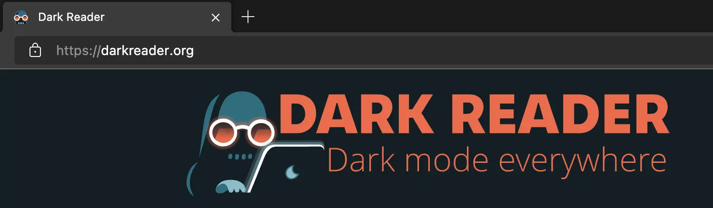
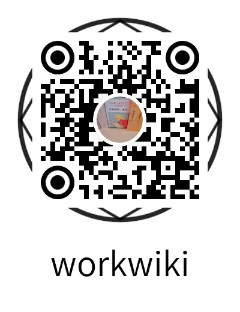

建立自己的代码托管平台
建立自已的代码托管平台
总览
flowchart LR
A(域名解析) --> B(配置Nginx)
B --> C(配置gogs)
C --> D(git提交)
D --> E(golang使用)
sequenceDiagram
actor u as 用户
actor h as hosts
actor n as Nginx
actor g as Gogs
actor f as 文件系统
u->>h: mydomain.site
h-->>u: 127.0.0.1
n->>n: 监听127.0.0.1
u->>n: `https://mydomain.site/what/up....`
n->>+g: `http://xx.xx.xx.xx:3000/what/up...`
g->>f: 读写
g-->>-n: http回包
n-->>u: https回包
域名解析
-
修改hosts
vim /etc/hosts #配置mydomain.site的dns为本机 #如果域名有备案,可以跳过此步,直接增加域名的A记录 127.0.0.1 mydomain.site -
申请域名证书
现在都不走http,都走https.个人项目,所以申请免费证书.生产环境还是要收费证书.免费申请证书途径:
- freessl网站
- letsencrypt网站
- 阿里云SSL证书服务
- 又拍云SSL 证书服务
- 七牛云免费SSL证书
- 百度云SSL证书服务
- 腾讯云SSL证书服务
- 华为云SSL证书管理SCM
配置Nginx
-
安装nginx
brew install nginx # 如果遇到不能启动，尝试启动sudo brew services start nginx brew services start nginx -
修改配置文件
...
server {
listen 443 ssl;
server_name mydomain.site;
#mydomain.site.pem/mydomain.site.key
#就是申请域名证书后,网站提供的相关文件
ssl_certificate ssl/mydomain.site.pem;
ssl_certificate_key ssl/mydomain.site.key;
ssl_session_cache shared:SSL:1m;
ssl_session_timeout 5m;
ssl_ciphers HIGH:!aNULL:!MD5;
ssl_prefer_server_ciphers on;
location / {
#直接转发gogs目录
proxy_pass http://xx.xx.xx.xx:3000;
}
}
...配置gogs
-
安装gogs
wget https://dl.gogs.io/$VERSION/gogs_$VERSION_$OS_$ARCH.tar.gz tar -zxvf gogs_$VERSION_$OS_$ARCH.tar.gz cd gogs_$VERSION_$OS_$ARCH- 其他方式安装,看这里
-
修改配置
[server] DOMAIN = mydomain.site HTTP_PORT = 3000 //旧版本是修改ROOT_URL EXTERNAL_URL = https://mydomain.site/ -
运行
#后台守护进程运行 nohup ./gogs web & -
创建仓库(可以导入其他的repos，快速创建)
#假设用户名为what,仓库名为up,仓库必须为公开,则仓库地址: https://mydomain.site/what/up.git
git使用
#git下载
git clone https://mydomain.site/what/up.git
#增加代码及其他
....
#提交代码
git pushgolang使用
-
设置私域名,不走代理
go env -w GOPRIVATE=mydomain.site -
代码使用
package main import ( "fmt" "mydomain.site/what/up" ) func main() { fmt.Println(up.Add(10, 10)) fmt.Println(up.Power(10, 10)) }
特别重要
-
保护眼晴
-

-
mac深色模式

-
-
Life is short.You need python!
print("hello, world")- Dead is coming. Let is Go!
import (
"fmt"
)
func main() {
fmt.Println("hello, world")
}扫-扫
- 技术博客
- 项目实战

- 公众号